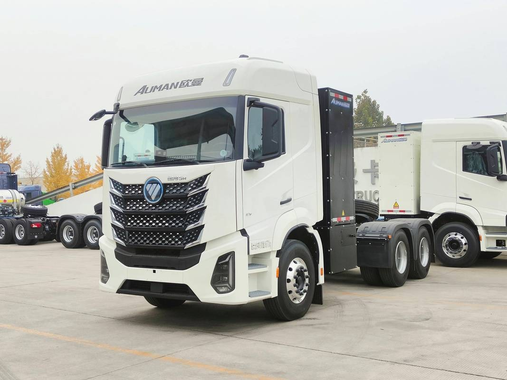
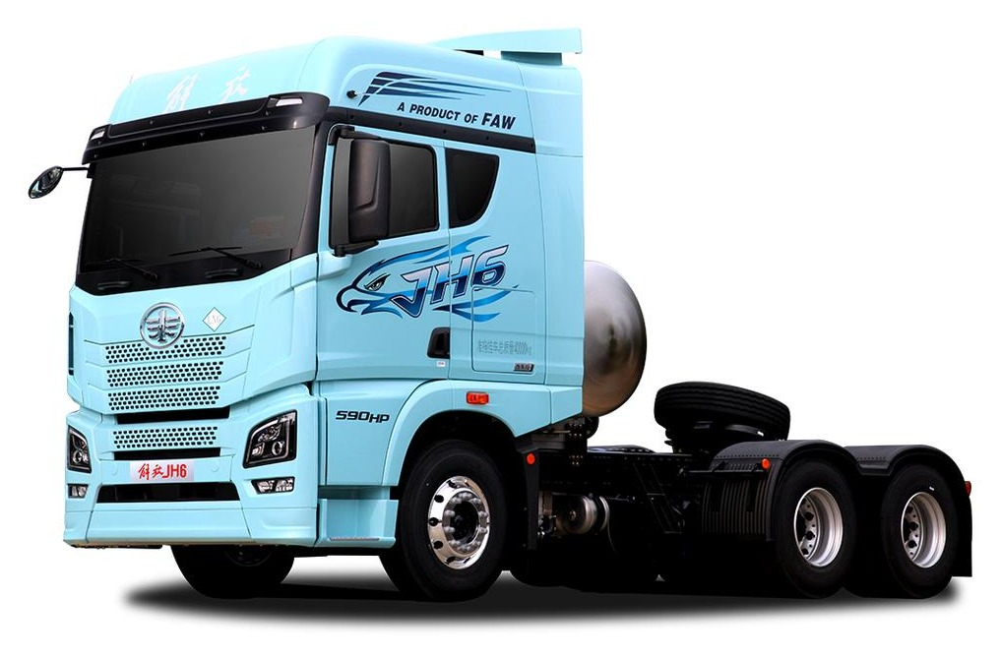
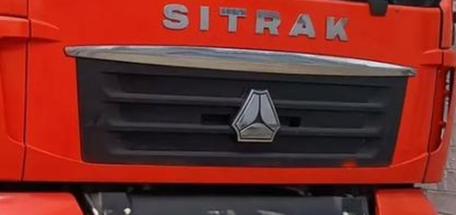
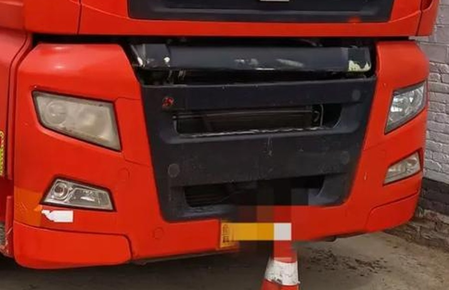
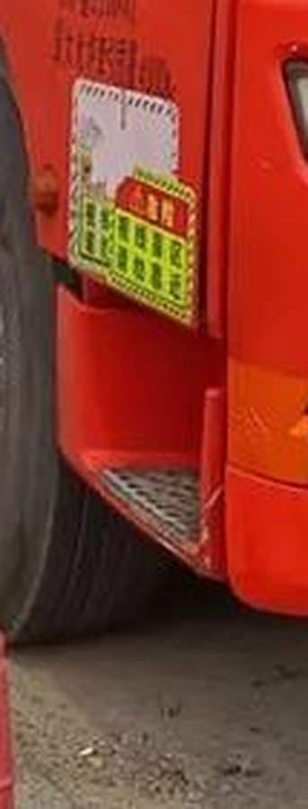
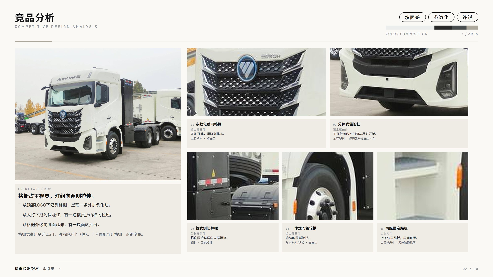
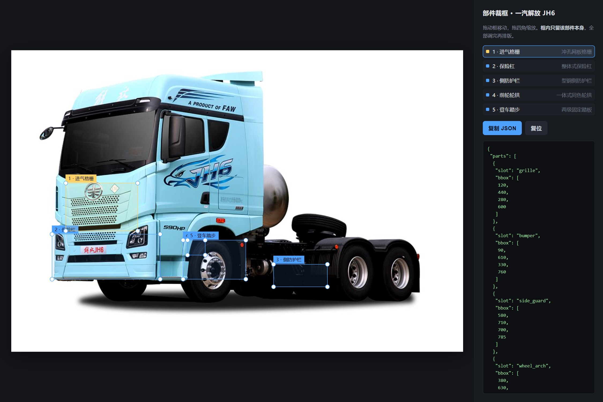

The Point / 全部主张
让设计师回到
判断与创意。
判断与创意。
AI 接管资料检索、图像分析与报告初稿制作；设计师保留定调、取舍与拍板。报告仍然是人做的，只是重复劳动不再由人做。
让 AI 承担资料检索、图像分析与报告初稿制作；
让设计师回到判断与创意。

HERO / 3-4 VIEW这不是一份功能清单，而是一份产品主张：AI 应该接管前期分析中可标准化的劳动，把判断与创意留给设计师。全书按“是什么 → 给谁 → 做什么 → AI 凭什么 → 怎么实现 → 用在哪 → 怎么落地”展开。
图片来源零散：甲方提供、展会拍摄、网络收集。无分类、背景杂乱、质量参差；去重、质检、归类全靠人眼。
造型语言、覆盖件分块与分缝、CMF、特征线，需要专业训练；不同设计师的口径与用词难以统一。
一车一页的版式高度重复；改一个字、换一张图，就可能牵动整页。格式劳动吞掉了本该用于推敲的时间。
分析结论散落在历史 PPT 与个人电脑里；下一个项目启动，竞品素材与判断又从零开始。
“报告不是‘写’出来的，
是‘找、看、排’三条流水线叠出来的。”
检索、去重、质检、归类，形成素材池。
AI 接管认出部件，写形态、CMF 与设计意图，生成结构化分析。
AI 起草 · 人校准页面模型 + 母版，确定性渲染为可编辑版面。
系统执行EquipLens 不生产“更多内容”。它把散落素材变成一份可确认、可编辑、可追溯的报告初稿，
让设计师从搬运工回到判断者。
把零散照片变成带标签、带质量分、可检索的资产：车型、视角、部件、来源。
一台车一份结构化分析：风格关键词、色彩比例、部件形态与 CMF、设计意图。
页面模型 + 母版，确定性渲染成可编辑 PPTX、PDF 与网页翻页册。
它不理解覆盖件分缝、CMF 与品牌家族，只会把文字塞进模板。
图片只是原料；可讨论、可修改的分析页才是产品。
报告不包含第一轮设计方案，只对齐风格与设计边界。
竞品 10–15 台，素材散落在多个文件夹与聊天记录里。
需要把“像什么、为什么像”讲清楚，而不是只放图。
汇报前会反复调整措辞、换图、增删部件。
他们不缺一个聊天窗口。他们缺的是一版能改的初稿、一套能说服客户的版式，以及能在评审会上回答“这张图从哪来”的底气。
“先给我一版能改的，
别让我从空白页开始。”
| 角色 | 在什么时候出现 | 真正关心 |
|---|---|---|
| 设计管理 | 评审与排期 | 覆盖是否全面、结论是否站得住 |
| 售前 / 方案 | 给甲方出调研报告 | 版式是否像“人做的”、能否直接讲 |
| 企业客户 | 汇报会 | 观点清晰、图文专业、可讨论确认 |
找图、分析、排版并行推进；先拿到初稿，再把时间花在判断上。
导出的 PPTX 不是整页贴图；在 Office / WPS 里继续改，版式不散。
每个车型、每张图、每条判断都能回到证据；缺证据就标出来。
把一次前期分析摊开，最长的两块不是判断，而是判断前后的搬运。AI 应该站在搬运发生的位置，而不是再开一个聊天窗口。
检索、去重、质检、归类一次完成；缺主图的车型直接标红，不拿相似车顶替。
目标：小时级VLM 识别部件，生成形态、CMF 与意图描述；设计师改词、改判断，而不是从零写。
目标：20–40 秒 / 车页面模型承载结构，模板负责版式；换图、改字、增删部件只改对应槽位。
目标：单页 ≤ 30 秒| 痛点 | 产品动作 | 对应能力 |
|---|---|---|
| 找图、整图 | 自动检索 + 门卫筛选 + 三篮子归组；缺主图阻断 | 素材获取 / M3 |
| 读图、写分析 | VLM 识别部件，输出形态、CMF、意图与风格词 | 图像分析 / M4 |
| 排版、返工 | 页面模型 + 母版渲染；改内容只重渲染该页 | 版式与导出 / M5–M6 |
| 结论留不下来 | 结构化分析 JSON 与运行台账；项目结束即沉淀 | 数据层 / P2 |
设备类别、关注部件、目标数量。先把“看什么”变成结构化 intent，再开跑。
推荐 + 方向级 + 备选，每条带证据；勾选后锁定为闭集。
自动检索或用户上传；整车 / 部件 / 其他三篮子；缺主图阻断。
VLM 逐台分析；页面即成品，可改文字、裁框与版式。
一键导出可编辑 PPTX、只读 PDF 或网页翻页册。
对话只负责澄清与纠偏；确认发生在清单、图片、页面这些对象上。
五步任意回改；已确认内容不被静默覆盖，变更影响范围可见。
单台失败不阻断整批；标红、可跳过、可重试，其余照常推进。
改一句要翻十屏，结论无法回滚，也无法定位到具体页面。
→ 落在结构化对象上中间没有确认点，越往后返工成本越高。
→ 两次检查点 + 可回退客户问“这张图哪来的”，只能凭记忆回答。
→ 证据与来源随页保留立项不是填一张表单，而是把“模糊的需求”变成一份可勾选的竞品清单。清单错了，后面全错。
| 车型 | 关联理由 | 证据 | 选择 |
|---|---|---|---|
| 福田欧曼 银河 | 同类目 · 6×4 牵引车，平头驾驶室 | E3 | |
| 一汽解放 JH6 | 同类目 · 宽体平头，格栅与大灯齐平 | E3 | |
| 中国重汽 汕德卡 C7H | 同类目 · 欧系方正构型，横向线条主导 | E3 | |
| 陕汽 德龙 X6000 | 同类目 · 大面罩、参数化格栅 | E3 | |
| 北奔 NG80 | 同平台 · 6×6，沙漠/越野工况参照 | E1 | |
| 沙漠环境用车（方向级） | 环境特化 · 待补具体车型 | E1 |
标题含型号的详情页；能点开、能看到出处。
方向级必须写 verify_by；未验证的具体型号不得占槽。
宁可少一台，也不让报告里出现“查无此车”。
类目、部件、页数预算；歧义先问人，不硬猜。
同类目 / 邻近类目 / 同平台 / 环境特化；部件级需求可跨车型取。
E3 优先；方向级标 provisional；超量自动转备选。
前期分析最常见的失败不是“没图”，而是“图很多，但没有一张能当主图”。EquipLens 先做减法，再做分析。




标红阻断该车，不用相似车型顶替；缺几台就少几页。
门卫先拦；人工改标后重新入池，错误不进入分析。
进“未归组”托盘，不丢、不硬猜；可手动指派或留待补采。
这是系统的真实输出：不是截图拼贴，而是一页由结构化数据渲染出来的 16:9 分析页。每一个字、每一张图都能改。

1 2 3 4 5 6 7 8左 1/3 主图 + 前脸分析；右 2/3 五个部件“图 + 卡”两行排布。
所有可见元素来自 analysis.json 与 page.ir，没有手工贴图。
文本、图片、形状均为原生对象；改内容只重渲染该页。
AI 生成的初稿只是起点。设计师需要在成品上直接改——改文字、换图、调框、拖版式，而不是回到空白页。

指令定位到页 → 改页面模型 → 只重渲染该页；其他页不动。
不是“更会聊天”，而是四个职责清晰的工位：检索、分析、规划、版式。每个工位都留下可确认、可修改、可追溯的产物。
对结果负责。AI 可以提议，但不能替人承担判断。
四个工位之间不是“传递文件”，而是四次可检查的交接：清单、素材、页面、成稿。每次交接都留下一个可回看的产物。
AI 不是一个万能助手，而是四个职责清晰的工位。每个工位有输入、输出和验收标准；人只在两个检查点出现。
从类目到候选清单；每条目标带 E3 证据，缺证据标红不硬猜。
看图，输出部件形态、CMF、设计意图与三词风格；可重试、可标 needs_review。
决定页型、每车页数、品牌家族页序与图槽分配；按页数预算收敛。
把 page.ir 填进母版，渲染为可编辑 PPTX / PDF；不做内容判断。
选车、增删、调序；锁定为闭集。没证据的车型不能进。
改字、换图、调版式；确认后才允许导出。
人做全部
AI 给候选，人执行
清单 / 分析 / 成稿
渲染 / 质检 / 导出
| 产物 | AI | 人 | 系统 |
|---|---|---|---|
| 竞品清单 | 提议 + 证据 | 勾选 / 增删 / 锁定 | 写入闭集 |
| 单车分析 | 起草判断与措辞 | 校准、改词、拍板 | 落库，标 needs_review |
| 页面版式 | 生成与填充 Page IR | 裁框、改字、调版式 | 渲染、导出 |
| 质量与合规 | 闸门与自检 | 抽检、确认来源 | 记录 run ledger |
如果 AI 只是生成一段文字，它很快会被替代；真正难的是让这段文字进入一条可确认、可修改、可追溯的生产线。
找图、分析、排版并行推进；先拿到初稿，再把时间花在判断上。
逐台分析、失败隔离；10 台车的整批时间进入分钟级。
离线评测 265 段金标；关键词基线假阳性 40.4% → 闸门 6.9%。
禁止整页贴图；Office / WPS 双端验证；目录与页码一致。
| 口径 | 数字 |
|---|---|
| 目标 | 3–5 天 → ≤1 天；20–40 秒 / 车；直接采用率 ≥60%；单次 ≤¥5（10 台车） |
| 实测 | 闸门精确率 93.1% / 召回 85.7% / 假阳性 6.9%；回放 A 字保留 44.9%；图片门卫 105 → 70 |
| 验收 | 元素 100% 可编辑；目录页码一致；来源可追溯；单页重渲染 ≤30 秒 |
AI 编排不是一个黑盒 Agent，而是五层结构。能写死的写死，能交给数据的交给数据，只有需要判断的才交给模型。
robots、配额、账本、检查点、schema。这些不给模型自由度。
来源注册表、类目档案、部件词表、母版；新类目不改代码。
意图、查询、选源、段落判定、停止；关节处允许自主，但输出过校验。
4C8G 可跑，SQLite + 文件系统；start.bat 起服务，不依赖 GPU。
用户只请求网页，零下载；素材与密钥留在服务端。
高频廉价判断可自托管；低频高价值 VLM 走云 API，可切换、可回退。
检索不是把搜索结果丢给模型，而是一条带闸门、带证据、可回放的链路。每一段进入报告的文字，都要先证明自己值得留下。
类目、部件、页数预算；歧义先问人。
四轴扩展 + 证据校验；方向级可占位，型号不可。
SERP、抓取、robots、配额、去重；按计划确定性执行。
对象锚定 + 主题排除 + 具体性；V/P/G/C 四档。
换词、降级、停止、问人；缺口驱动下一轮。
Facts / Descriptions 抽取，进入分析 schema。
265 段金标；4 批离线回放；阈值按“过闸 A 字/千字 + 页槽填充”扫掠。
标题含型号的详情页；可点开、可逐字校验。推荐位必须 E3。
方向级线索；可占位，但必须写 verify_by，不能冒充具体车型。
无证据；标红、不可勾选，宁可少一台也不编。
没有现成语料；从零加工质量未知；存了也未必适配具体场景。
每次项目按统一 schema 结构化入库；先继承平台共性，再叠加变体差异。
分析 JSON 不是中间文件，而是全系统的公共合同：检索按它找缺口，分析按它填内容，排版按它渲染，知识库按它沉淀。
客观事实：分块分缝、比例、尺寸关系。
可被设计师直接讨论与修改的视觉语言。
给用户什么价值；报告里最不可替代的一段。
检索：按 schema 找缺口，驱动补采。
分析：按槽位填内容，失败只重试单点。
排版：同一 JSON 渲染三种格式。
知识库：项目结束即沉淀。
Prompt、模型、流程的任何变更，都必须先过评测；否则“感觉更好”会变成不可回滚的债务。
人工金标 + 评分维度；先写清楚什么算“好”。
固定输入、固定模型版本、固定 prompt，可复现。
精确率、召回、采纳率、成本；不只看单项。
不达阈值不合入；回滚有据可查。
| 记录 | 用途 |
|---|---|
| run_id | 复现一次检索 / 生成；断点续跑与审计的锚点。 |
| model_id + prompt_version | 定位“哪次变更导致指标变化”；Prompt 与代码同仓。 |
| evidence_index_version | 证据可回溯；清单里的每条目标都能对到版本。 |
| cost + latency | 单份报告成本与性能；模型 / 参数甜点组合的依据。 |
| 失效 | 表现 | 对策 |
|---|---|---|
| 关键词假阳性 | 营销稿、参数页被当成设计分析 | 确定性闸门 + 对象锚定 |
| 车型身份错配 | 图对了，但不是这一型号 | 标题 + 构型 + 人工复核 |
| 部件裁图偏位 | 框到轮子、背景或相邻部件 | 裁框编辑器 + 人工确认 |
| 长尾类目缺证据 | 清单填不满，或只能给方向 | 关联扩展 + provisional + 如实报缺口 |
沙漠牵引车是一个典型的长尾类目：公开素材少、型号边界模糊。系统要做的不是硬凑，而是把“相关的车”和“相关的部件”分层找出来。
“沙漠牵引车”本质是较常规的卡车头；真正因沙漠环境而设计的是踏步、防护栏与底盘。因此不能只按车型名硬搜。
只有 3 台有可用主图；具体型号证据不足；部件需要跨车型取参照。
同类目 / 邻近类目 / 同平台 / 环境特化；每条占槽目标带 E3 证据，方向级写 verify_by。
锁定 12 页槽；缺口如实报，超出转备选；不拿“待定”凑页数。
类别 + 部件 + 页数预算；歧义先问人。
1 min沙漠用车 / 牵引车 / 卡车头分层进入候选。
四轴9 推荐 + 3 备选；E3 证据 11/12。
2 min三篮子归组；缺主图直接标红阻断。
缺图 1 台12 页分析；逐页审校后导出 PPTX。
12 页能想到谁就查谁，长尾类目容易漏。
AFTER 四轴扩展 + E3图很多，但不知道哪张能当主图。
AFTER 门卫 + 三篮子排版占掉一半时间，改一句牵动整页。
AFTER 12 页可编辑初稿不是所有前期分析都叫“竞品对标”。同一套素材、分析与版式能力，可以服务三种不同的交付任务。
10–15 台竞品，按品牌家族组织；一车一页，向客户对齐风格与设计边界。
只盯一个部件（如登车踏步），跨 6–8 台车集中对比；一页 5–6 个单元。
旧报告、旧素材按统一 schema 沉淀；下一个项目从已有资产开始，而不是从零。
| 任务 | 素材条件 | 预期收益 |
|---|---|---|
| 新车立项对标 | 10 台以上可用主图，部件 3–5 个 | 高：一版可编辑初稿 + 完整清单 |
| 单部件专项 | ≥5 台车可裁出同一部件 | 高：跨车型集中对比 |
| 趋势 / 品牌基因 | 需要外部资料与主观判断 | 中：P2 章节能力 |
| 1–2 台车的小比较 | 样本过少，结论不稳 | 低：先补素材，或直接用通用工具 |
先把“看什么”变成清单，再把“图”变成证据，最后把“证据”变成可编辑页面。场景在变，流水线不变。
封面 / 目录 / 单车页 / 封底；一套品牌母版。
只做局部设计分析；同一部件跨车型排布。
先检索历史资产，再决定是否需要新分析。
当前处在 P1 MVP：五步壳、单车分析、版式与导出已能跑通；检索线已跑通，正在做整体测试。
PRD v1.0、数据模型、交互说明、评测集 v1、检索线分层设计。
五步工作台、3 台车端到端、裁框 / 改字 / 版式、PPTX 导出、单机 start.bat。
39 车型证据索引、图片通道稳定、特征线专项、整体测试与阈值扫掠。
局部设计分析、品牌设计分析、情绪版、多母版、项目与素材库。
成本甜点调优、素材跨项目复用、多人协作、评测体系 v2。
闸门 → runner → audit → 报告全链路；阈值扫掠，主指标=过闸 A 字/千字 + 页槽填充。
扩到 39 车型；跑“无证据”案例，验证缺证据时会不会编。
23 车型 / 70 张图逐条判定；再决定 VLM 是否启动。
AI 产品最容易犯的错，是把“演示可行”说成“生产可用”。这一页列出已知风险、当前对策与状态。
| 风险 | 表现 | 当前对策 | 状态 |
|---|---|---|---|
| 模型幻觉与证据缺失 | 编车型、编结论、把宣传稿当分析 | 强制证据 + 确定性闸门 + 两个人工检查点；缺证据标红。 | 已建 |
| 图片版权与数据合规 | 来源不明、素材外泄 | robots / 来源记录 / 不训练 / 密钥不入库。 | 已建 |
| 版式审美与品牌适配 | 模板不像客户品牌，改版成本高 | 母版由设计师定义；Page IR 与样式分离；改内容不重排版。 | 进行中 |
| 长尾类目素材不足 | 清单填不满、页数不够 | 四轴扩展 + provisional 占位 + 如实报缺口；不拿相似车顶替。 | 进行中 |
| 模型 API 依赖 | 超时、限流、涨价、供应中断 | LiteLLM 网关多供应商、降级链、可切换 / 可回退。 | 已建 |
用户素材仅用于本项目分析输出，不用于模型训练；API 密钥经环境变量管理，严禁入库；联网检索遵守 robots 与配额；来源 URL 随页面保留，支持客户审计。
来源字段 + 页脚；可回到 URL 或上传文件名。
清单证据 E3 / E1；关联理由可展开逐条看。
PPTX 原生对象；改字换图不重排版。
AI 接管资料检索、图像分析与报告初稿制作；设计师保留定调、取舍与拍板。报告仍然是人做的，只是重复劳动不再由人做。